Data Pill
داتا بيل
هوية بصرية لأكاديمية «Data Pill» لتعليم البيانات والتوظيف، تحت شعار «Learn. Build. Get Hired». شعار كتابي هندسي بحروف مصمَّمة خصيصًا يحمل طابعًا رقميًا واضحًا ويقف وحده دون أيقونة، مع رمز D مستخلص منه للتطبيقات. بتدرّج البنفسجي والأزرق الكهربائي على النيلي العميق، وتمتد الهوية إلى اللوحات الإعلانية وقاعة الفعاليات وبوسترات السوشيال ميديا والحقيبة وتطبيق الجوال والموقع.
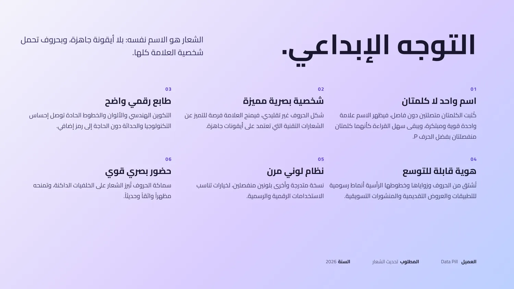
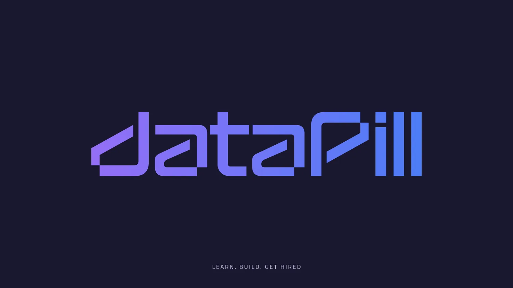
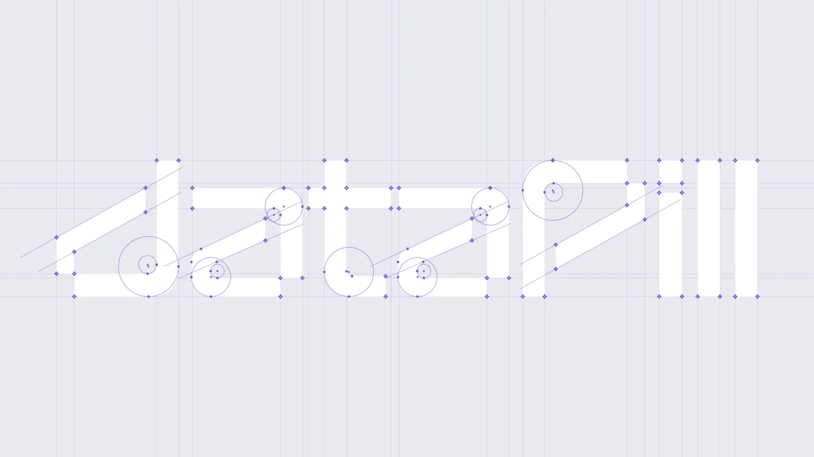
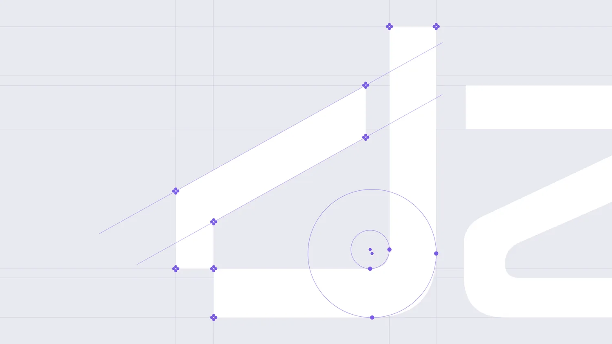
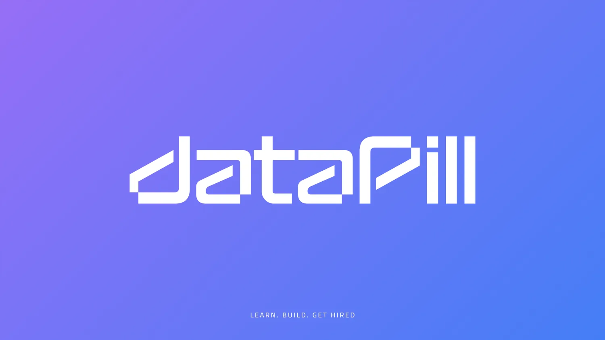
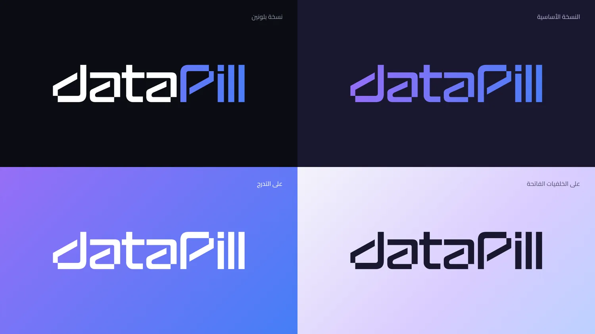
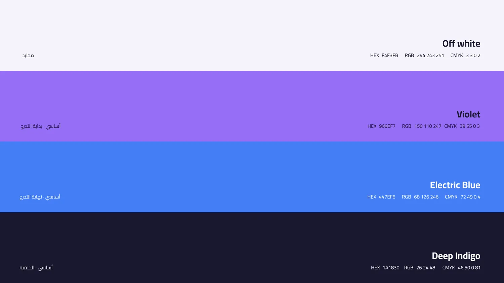
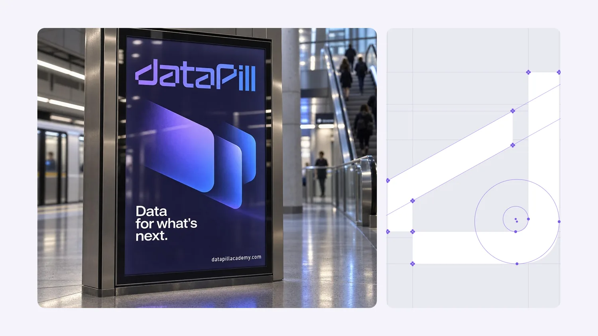
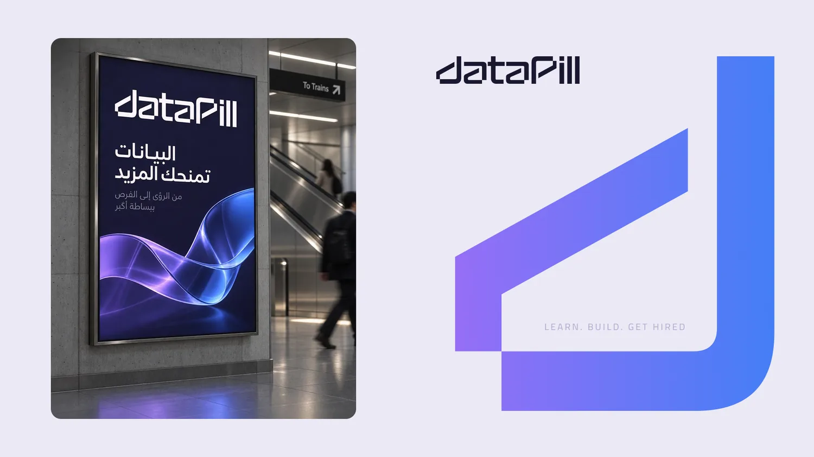
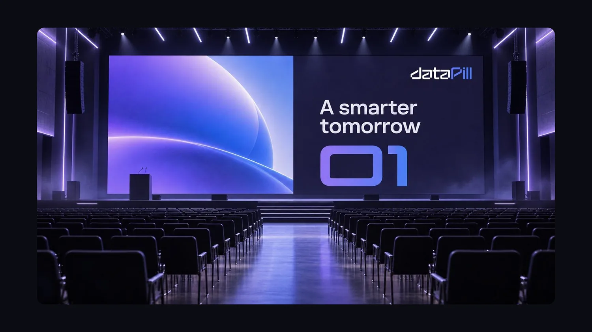
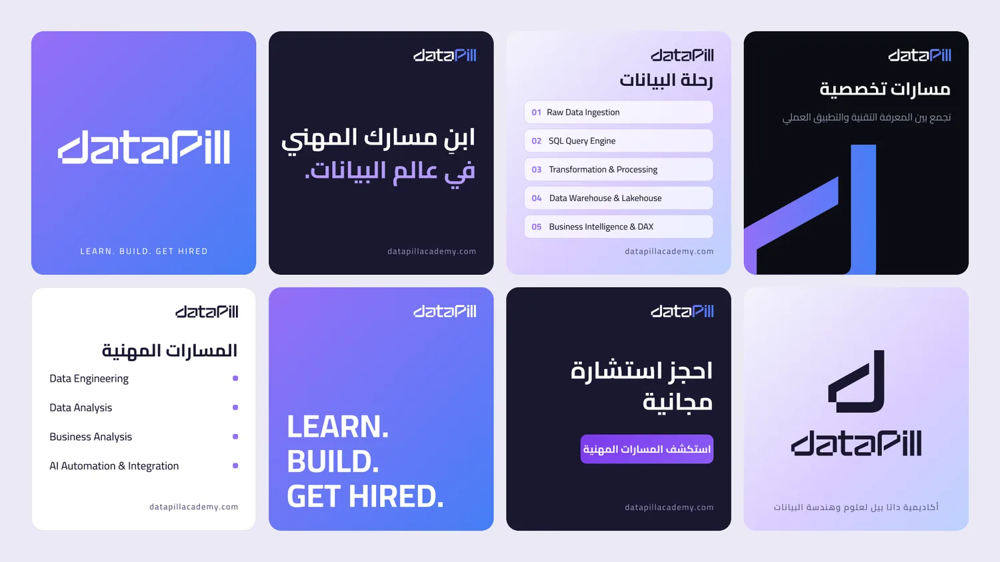
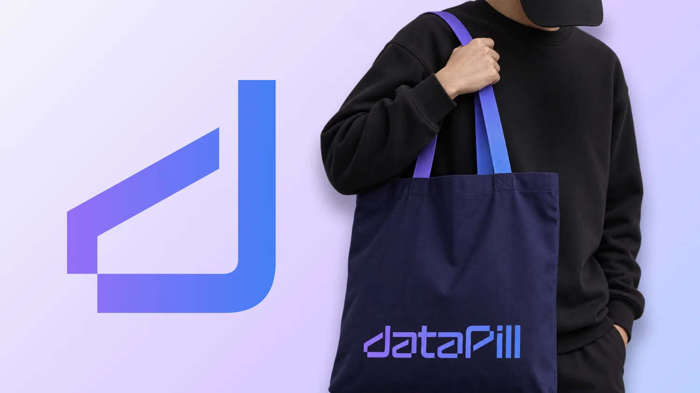
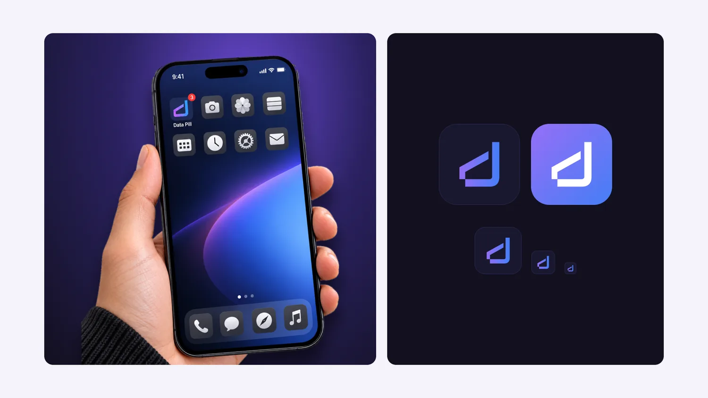
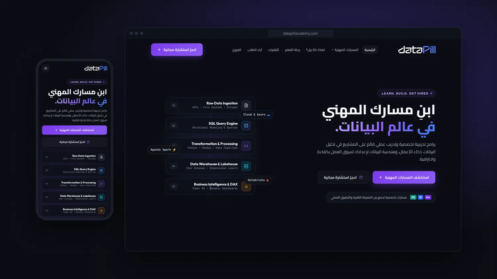
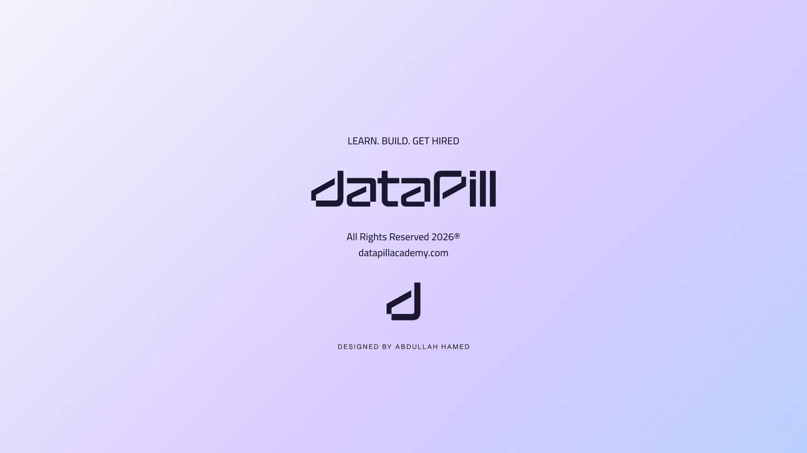
انتلجنس للمشاريع